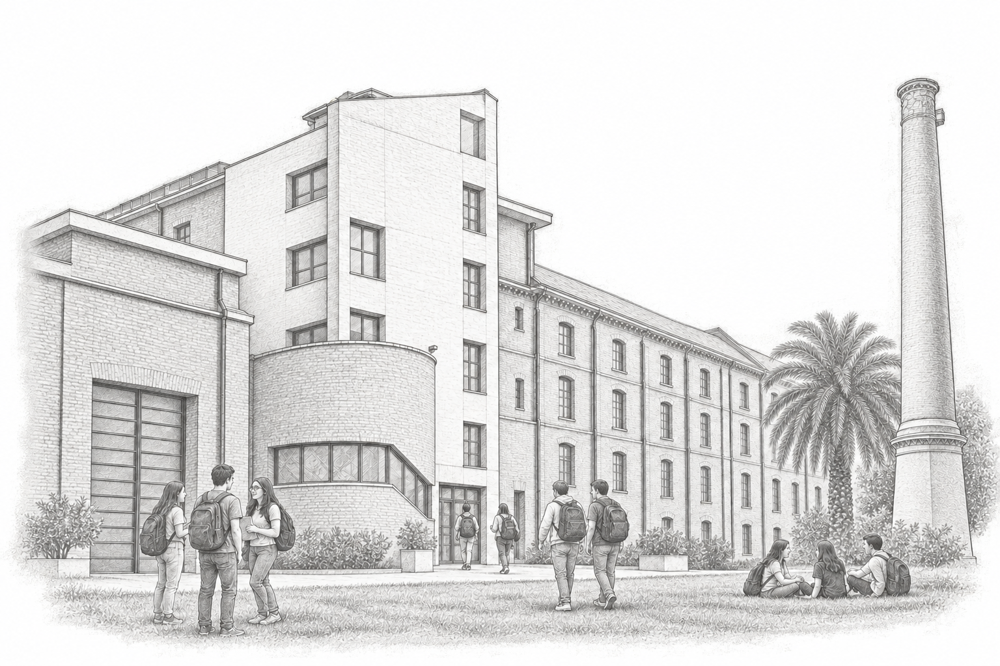
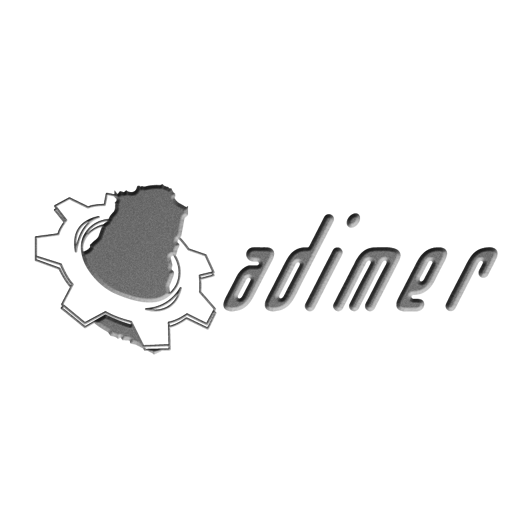
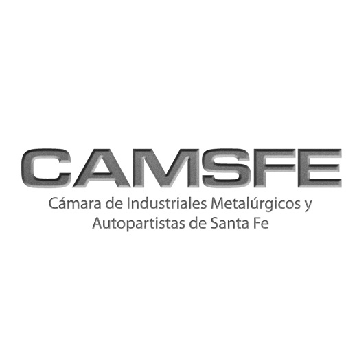

Formación superior
Tecnicaturas
Carreras que vinculan conocimientos y práctica para desarrollar tu perfil profesional. Conocé sus planes de estudio y títulos.
Ver tecnicaturasInstituto Tecnológico El Molino
En Esperanza, Santa Fe, conectamos la formación práctica con las necesidades de las personas y las empresas de la región.
Consultá los requisitos de ingreso
Conocé las distintas propuestas y elegí según tus intereses y objetivos.
Formación superior
Carreras que vinculan conocimientos y práctica para desarrollar tu perfil profesional. Conocé sus planes de estudio y títulos.
Ver tecnicaturasOficios y competencias laborales
Cursos y trayectos para aprender un oficio o fortalecer tus capacidades mediante una formación orientada a la práctica.
Explorar cursos y trayectosActualización y perfeccionamiento
Cursos, talleres y seminarios para actualizar conocimientos, con propuestas abiertas y formación a medida para organizaciones.
Ver capacitaciones¿No sabés qué propuesta elegir? Consultanos y te orientamos.
Una formación que conecta lo que aprendés con situaciones reales del mundo del trabajo.
La formación práctica en aulas taller y laboratorios permite aplicar los conocimientos y desarrollar habilidades vinculadas con cada especialidad.
El vínculo del instituto con el sector productivo acerca la formación a las necesidades de las empresas de la región.
Los espacios de formación cuentan con herramientas y equipamiento para acompañar el aprendizaje de distintas disciplinas técnicas.
Las propuestas educativas promueven conocimientos y competencias relacionados con el desempeño profesional y las actividades productivas.
Conocé el instituto
El Instituto Tecnológico El Molino es un proyecto educativo de articulación público-privada ubicado en Esperanza, Santa Fe.
Su propuesta responde a necesidades de formación práctica y brinda servicios para contribuir a la competitividad de las pequeñas y medianas empresas de la región.
Conocé más sobre ITECConocé las actividades y novedades de nuestra comunidad.
Cargando noticias…
Acompañamos a empresas y organizaciones con recursos tecnológicos, asesoramiento y apoyo para desarrollar sus proyectos.
Ensayos de materiales y controles de calidad mediante recursos de laboratorio: ensayos destructivos, no destructivos y metalografía.
Conocé los servicios tecnológicosLa Unidad de Vinculación Tecnológica (UVT) acompaña la formulación y gestión de proyectos productivos y de innovación, y la búsqueda de programas de apoyo.
Conocé el acompañamiento de la UVTAsesoramiento a medida en gestión de la producción, calidad, recursos humanos, automatización y planificación de negocios.
Explorá las áreas de asesoramientoLa vinculación institucional conecta la formación con el sector productivo y amplía las oportunidades de colaboración.
Compromiso con la educación
Un programa de la Fundación Instituto Tecnológico El Molino que reconoce a las empresas comprometidas con la educación mediante beneficios en propuestas de formación y servicios.
Conocé el programa Empresas que Educan, abre otra pestañaTecnología y formación
Una red que acerca formación, servicios tecnológicos y vinculación a empresas y trabajadores del sector metalúrgico, promoviendo la innovación y la cooperación.
Explorá la Red de Centros de ADIMRA, abre otra pestaña Centro de Servicios Industriales
Centro de Servicios Industriales
 IAEA
IAEA
 Instituto Tecnológico Rafaela
Instituto Tecnológico Rafaela

ADIMER
Cámara de Industriales Metalúrgicos y Autopartistas de Santa FeConocé también los vínculos del instituto con organismos e instituciones de alcance nacional, provincial y regional.
Ver vinculación institucionalCon motivo de su 25.º aniversario, el instituto reunió los acontecimientos que marcaron su trayectoria entre 1998 y 2023.
Recorré sus primeros pasos, el crecimiento de sus espacios educativos y el desarrollo de nuevas propuestas de formación y vinculación.
Información sobre formación, actividades y novedades institucionales.
Consultanos sobre carreras, cursos, inscripciones o servicios para empresas. Elegí cómo comunicarte.